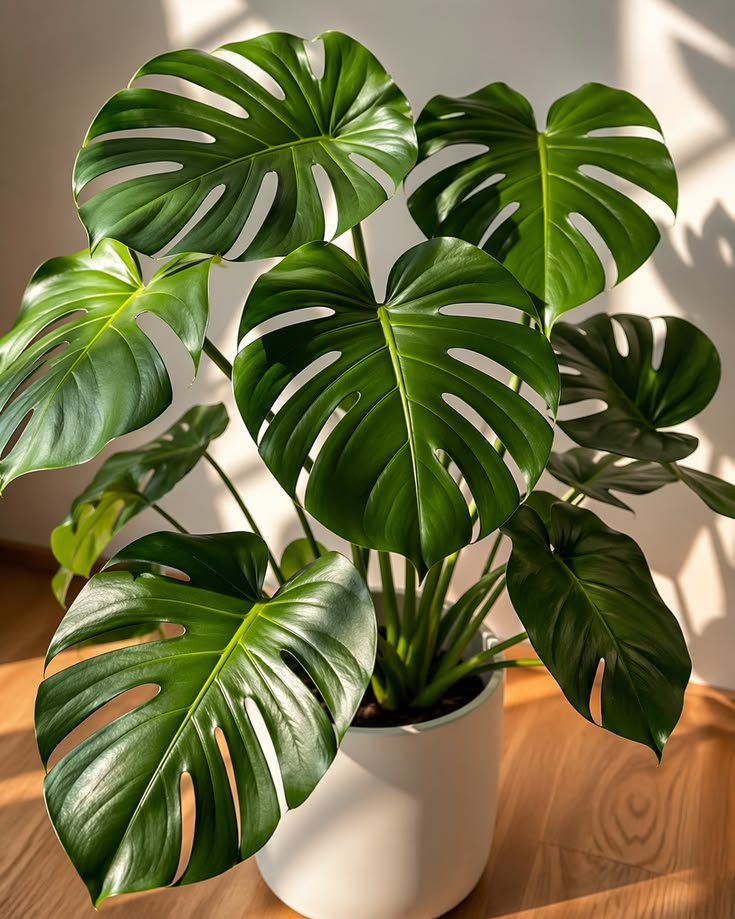

Costela-de-adão
Sobre ela:
Planta tropical famosa por suas folhas grandes e recortadas, muito usada na decoração de
interiores.
Combina com:
Quem gosta de ambientes modernos e quer uma planta de destaque.